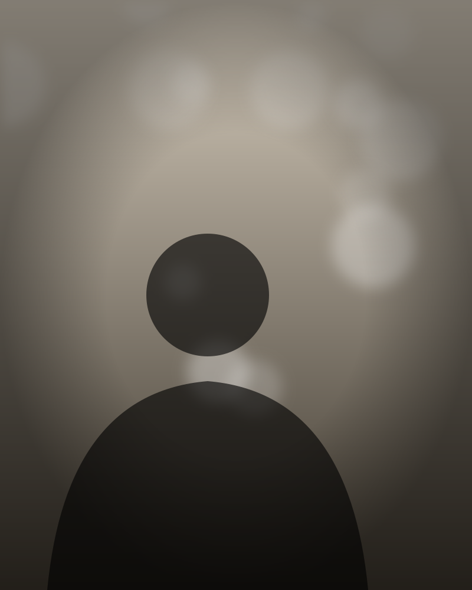

Hello, I’m Abel.
Photographer, storyteller and chaser of golden hours: a little about the person behind the camera.
- 12+years shooting
- 3continents
- Portrait · Wedding · Landscape

A quiet observer with a loud love for light.
I picked up my first camera at fourteen and never really put it down. What began as chasing sunsets became a career built on listening: to people, to places, to the quiet moments in between.
Today I shoot portraits, weddings and landscapes with a documentary eye: no stiff poses, no heavy retouching, just real light and real feeling.
When I’m not working, you’ll find me wandering with a flask of coffee, looking for the next good shadow.
A decade, framed
Three quiet principles
Light first
Everything begins with the light. I wait for it rather than force it.
People over poses
I’d rather catch a real laugh than perfect a posed smile.
Honest edits
Warm, film‑inspired tones that look like the moment felt.
Tools of the trade
Shooting style
Documentary and unobtrusive. I stay close, stay quiet and let the moments happen.
Editing
Warm, true-to-life colour with gentle contrast. Every image is hand-finished.
Delivery
A preview within 48 hours and the full online gallery within two weeks.